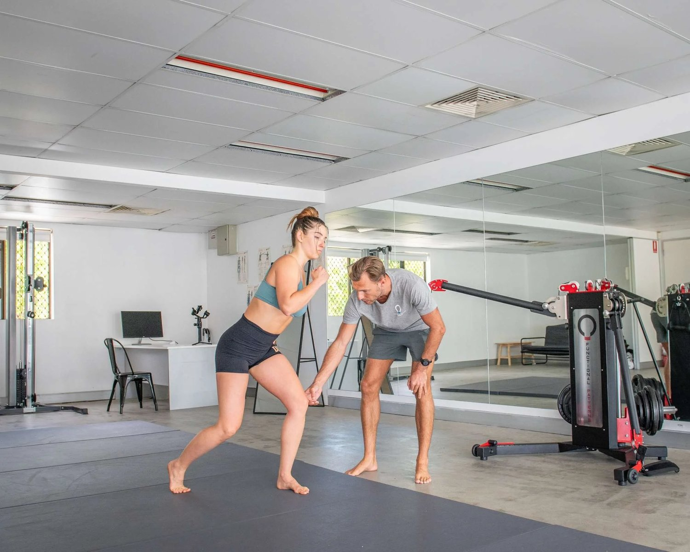

When you hear about posture exercises, you might think of stretches or strengthening moves that promise quick fixes. But most of these exercises don’t address the real reasons why bad posture happens in the first place. Aches and pains often persist despite traditional attempts to correct your posture.
At Functional Patterns Brisbane, we take a different approach correcting bad posture. We look at how the whole body works together, helping you not just fix your posture but also keep it that way for the long term. The best exercises for better posture mimic the movements that your body naturally performs. Workouts for good posture often isolate your muscles and do not relate to your reality outside the gym.
What’s Wrong with Common Posture Exercises?
1. They Squish (Compress) Your Spine and Joints
Many workouts to improve posture focus on moves like crunches or heavy lifting. These exercises put too much pressure on your spine and joints, making it harder for your body to remain in aligment.
For example, sit-ups mainly target your abdominal muscles but don’t help your whole body work together. Instead of making your posture better, they can actually make things worse by squishing, or compressing, your back.
When your body feels this kind of pressure, it becomes harder to stand, walk, or even sit with proper posture.

2. They Make Imbalances Worse
A lot of exercises to help posture only work on one part of the body at a time, like the back or shoulders. But if the rest of your body—like your hips, feet, or core (your middle muscles)—is out of balance. these exercises, often hailed as the best posture workouts, might make those imbalances worse.
For example, you might hear that squeezing your shoulder blades together will help fix your posture. While it might make you feel upright for a moment, it doesn’t fix problems lower in your body that can pull your posture out of place again. At Functional Patterns, we work on your whole body to make sure everything is balanced and connected.
3. They Don’t Match Real Life (SAID Principle)
The SAID principle stands for "Specific Adaptations to Imposed Demands." It’s a fancy way of saying that your body gets good at what you practice. So, if you practice movements that don’t match what you do in real life, like stretches that don’t involve moving, your body won’t learn how to maintain good posture while standing, walking, or sitting.
For example, an exercise like "cat cow" (a stretch where you arch and round your back) might feel nice, but it won’t teach your body how to stay in the correct standing posture or how to handle real-life movements like bending to pick something up.
4. They Work Muscles Separately Instead of Together
Your body is like a big team—all the parts need to work together to succeed. But most posture exercises focus on one muscle or one area of the body at a time. This is called isolation. For example, you might try to strengthen just your lower back without thinking about how your feet, legs, and hips are working together.
At Functional Patterns, we train your body as a whole team. Instead of isolating muscles, we create exercises to improve posture by helping your whole body move together in a natural way. This makes your results last longer and helps your posture in everything you do, from standing to running.

Traditional Training VS Functional Patterns Training
What Makes Functional Patterns Different?
1. We Use Pressure Dynamics
Pressure dynamics is about balancing the pressure inside your body, like the pressure in your joints and spine. Many common exercises squish or compress your body, which throws off this balance. Instead, we focus on movements that spread out pressure evenly, so your body stays strong, stable, and comfortable.
For example, when you engage your core—your middle muscles—you’re not just tightening your abs. You’re helping your back, hips, and shoulders all work together to support proper standing posture.
2. We Look at the Whole Body
Bad posture often comes from a mix of problems in different parts of the body. We don’t just focus on one area like your shoulders or lower back. Instead, we check everything—from your feet (are they flat on the floor?) to your hips (are they level?) to your core (is it strong and stable?). By working on your entire body, we help you achieve results that last.

3. We Teach Real-Life Movements
Our posture workouts are designed to mimic real-life activities like walking, lifting, or sitting at a desk. This means you’re training your body to handle the movements you do every day.
Instead of exercises that just feel like a stretch, we focus on movements that help you improve your posture while you’re moving around. This way, you learn how to maintain good posture even when you’re busy. Workouts to help posture should relate to your everyday life (walking, standing, running ect).
Better Exercises for Better Posture
Here are some examples of posture exercises we use at Functional Patterns. These workouts for better posture address poor posture:
-
Core Strengthening with Movement: We teach you how to engage your core while moving your hips and shoulders, helping you stay upright and stable.
-
Back and Rotation Training: These exercises train your body to twist and move naturally, improving strength and flexibility while keeping your posture aligned.
-
Standing Drills: These drills help you balance your weight evenly with your feet flat on the floor, knees bent, and your spine in the right position for standing.
-
Integrated Movements: We use movements that integrate your body as a system. This allows us to address over/under-active muscles and chains. By creating a more integrated system, posture naturally begins to balance out and improve.

How to Permanently Fix Posture
If you’ve been wondering how to get good posture and keep it, it’s time to move past quick fixes. At Functional Patterns Brisbane, we focus on exercises that fix posture by helping your whole body work together. Whether you struggle with neck pain, sitting at a desk all day, or just want the best exercises for posture that fit into your life, we’ve got you covered.
Start Your Posture Transformation
Ready to say goodbye to wrong posture habits and feel confident in your body again? Join one of our workshops or book a consultation to learn more.
Let us help you feel and move your best with Functional Patterns today!
You may also be interested in:
https://www.functionalpatternsbrisbane.com/blog-page/how-to-fix-neck-humps-a-biomechanical-approach